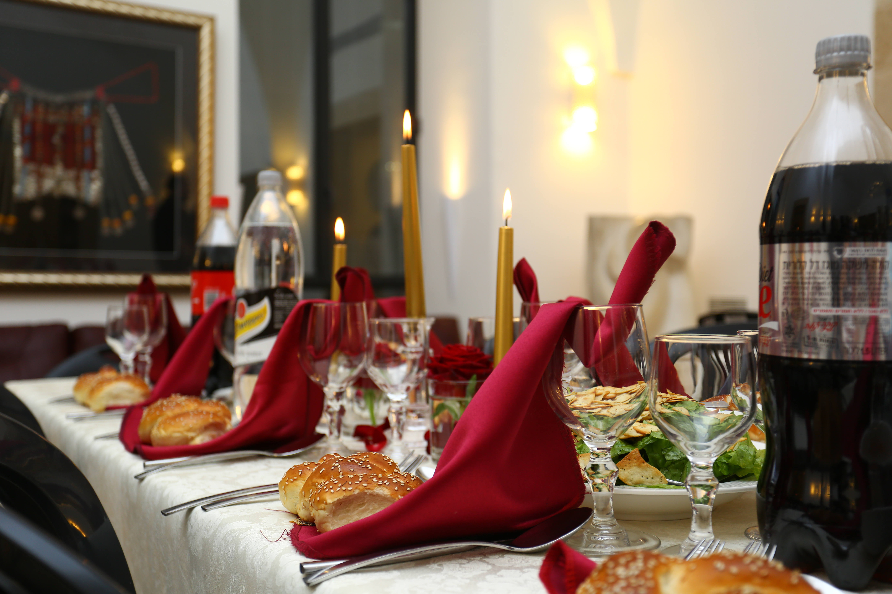
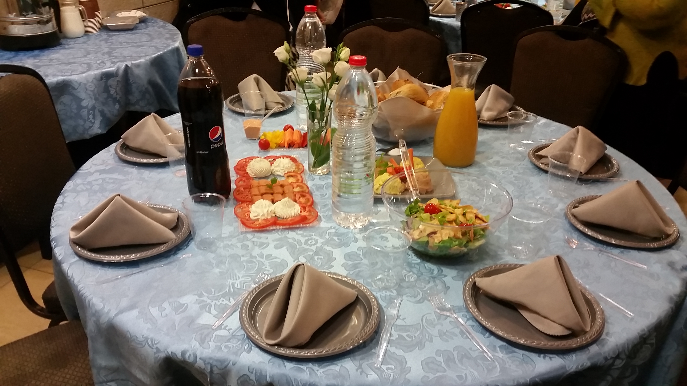
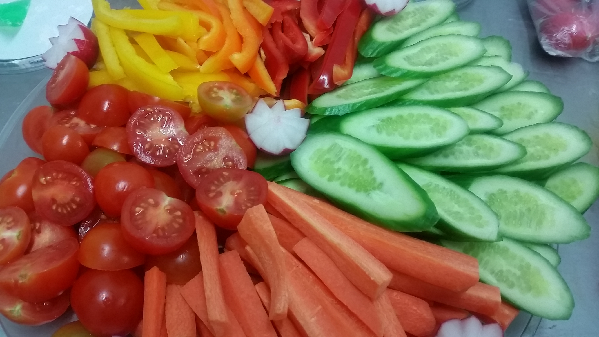
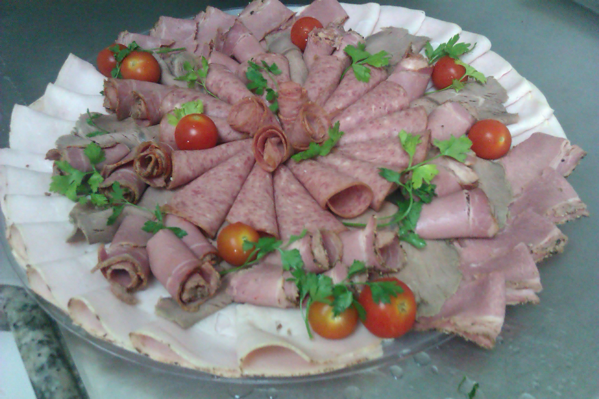

(need a good image for the following 3)




SOme form of headline saying:
The kiddush Club
(need a good image for the following 3)
As my wife, Simi, was looking for her next job, which is a pretty common occurrence on this side of the ocean, potato kugels sounded like it might be a good idea. Her friend had a neighbor who was leaving back to America who sold kugels in the local store and made kiddush sized ones for private orders. As for me being the business man around here I said to myself, well, I know that store and that store, that owner and that owner, I'm sure we could expand this operation in no time. B"H, that is exactly what happened. Now, more than 100 loaf pans are sold every Erev Shabbos throughout Yerushalayim.
Then came Zookie's Famous Herring. Running a busy Wednesday and Thursday schedule, We were now looking for something to fill up Sunday's, Monday's, and Tuesday's. Our friend Baruch Zuckerman, otherwise known as Zookie, made the best herring in town! Simi even bought it for me as a birthday present once!
Of course, like many people, he moved back to America and we bought the business. Zookie taught us step by step instructions on how to make a herring lovers best herring. We have Pickled Herring in Cream Sauce, Real Matjes, and Dijon Cream Sauce. We are now in the process of putting out all your favorite flavors in spicy versions!! Now THIS is Oneg Shabbos! Zookie's can be found on the shelves of many Yerushalayim makolets on a weekly basis.
Next up -The Kiddush Club. Starting with basic Kiddush Catering, potato kugel and herring, we wanted to be a one stop shop where people can get all their kiddush needs. People are always running to this person for kugel, that person for herring, this person for cholent, that person for cakes...what a headache! That's where The Kiddush Club came in. A one stop shop for all your kiddush needs. We started making our own cholent, which is HEAVEN!! (as many people say) and yerushalmi kugel too. Cakes we still outsourced, but we created a convenience that wasn't there before.
We then took this to a whole new level. We succeeded in getting a private kitchen, thus being able to get a Hashgacha under Badatz Mehadrin, R. Rubin. This was a big deal because there are many small home based food businesses, but almost none of them sell food with a hashgacha. Recently we have switched to the most prestigious Hashgacha in the world, Badatz Eida Hachareidus of Yerushalayim.
Now that we had the facility, all we had to do was put Simi's best recipes on the market- and that's exactly what we did! We developed a mouth watering menu as well as mouth watering food, dedicated to quality and taste. Yum!! There is nothing like scrumptious home cooked American food!
After settling in making Shabbos for many people, we then went on to event catering. We added a very talented party planner, Rivky B., to our staff and with her expertise and creative taste, we are able to put together quite an impressive party. You can see from the pictures yourself!
Now, The Kiddush Club offers American Catering for all Events including a full menu for Shabbos and Yom Tov.
So whether it be a Sheva Brachos, Kiddush, Shabbos Meal, Bar Mitzvah, or Dinner Party, or whatever the Simcha might be, The Kiddush Club is dedicated to giving you the best in both taste and service!


The food tasted great - especially the cabbage salad, and we were very impressed with the customer service and accommodations you were able to make in changing some of the ingredients. The next time my mother comes we would be happy to use you again. -Yaakov
Hi, I just wanted to let you know that everything in our order was delicious. There were many compliments. The carrot and squash kugels were really cakes. Chulent, chicken, kugels all very delicious. Of course, they couldn't wait to taste the herring! Kol HaKavod! Best wishes for a Happy and Healthy New Year, The B. Family
The food was good homemade food. My husband felt he was eating home. My mother loved the kugel, kids loved the meat balls - y.y.
Hi good voch! Firstly thank you so much for everything and for working with us so last minute! It was all delicious and couldn't have worked out better. I'm happy to recommend you!! - S. B.
Thank you for delicious and beautiful Shabbos seudos. Everything was well prepared, generous,.... Everyone enjoyed immensely.. Thank you! - S.G.